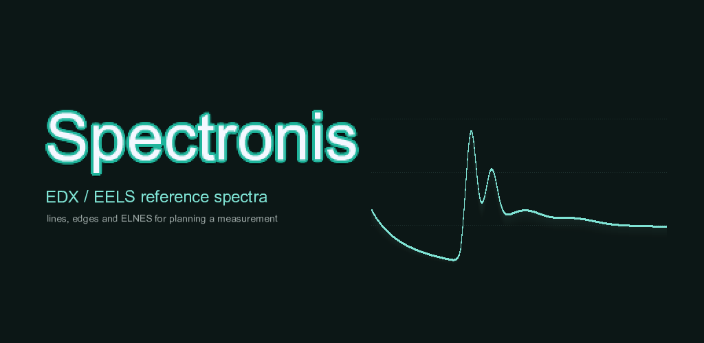
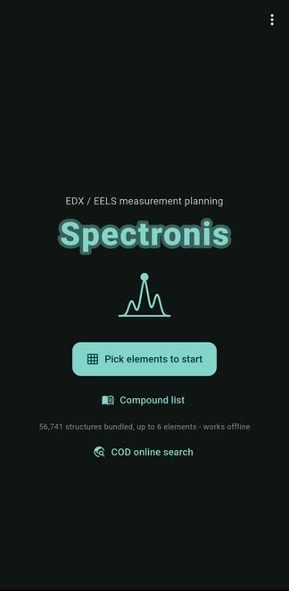
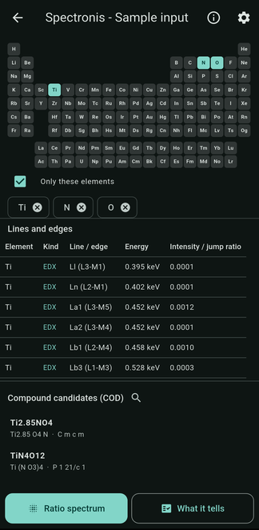
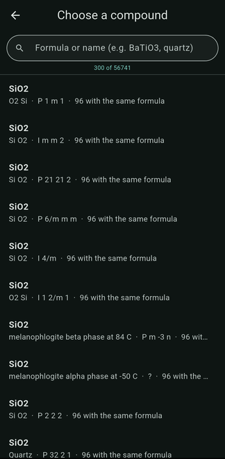
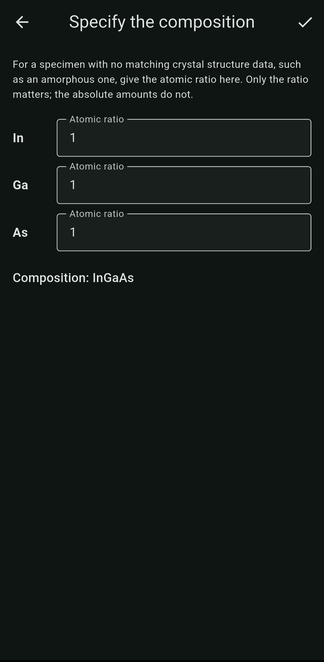
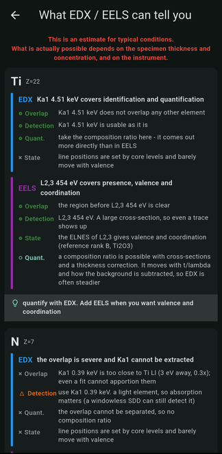
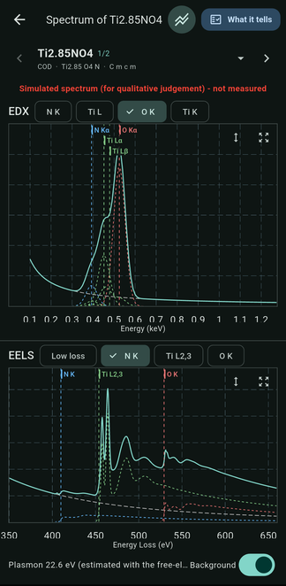
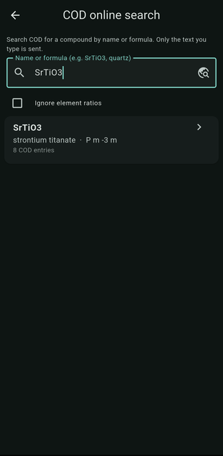

1Start from the specimen, not the instrument
You do not need a spectrum to begin. What the app needs is which elements are in the specimen.
Apps › Spectronis

Spectronis tells you what a specimen will actually let you measure, before you start an EDX or EELS session. Use it at the instrument while you decide the conditions.
It will not make you choose between EDX and EELS. They are not substitutes for one another, so what each can tell you is shown for both, with one line at the end on how to combine them.

You do not need a spectrum to begin. What the app needs is which elements are in the specimen.

Choose them on the periodic table. That alone is enough to get an answer.
The lines and edges for what you picked are listed straight away — element, EDX or EELS, line or edge name, energy, and relative intensity. Compound candidates from the bundled database are offered underneath.

Enter a chemical formula, or pick a compound from the bundled Crystallography Open Database data, and the elements come with it.

A composition ratio sharpens the overlap percentages and the quantification judgement. It is optional.

For each element, four judgements are laid out side by side for both techniques: detection (can it tell you the element is there), overlap (can it be separated from the others), quantification (can you get a composition ratio) and chemical state (can you read valence and coordination).
Line names, edge names and numbers are always included, so the answer can go straight into the instrument settings.

The EDX characteristic X-rays and the EELS loss spectrum are drawn one above the other, with a chip per line and per edge so you can turn each one on and off and see what sits on top of what.
The plot is labelled “simulated spectrum, for qualitative judgement — not measured” in red, at the top, every time. It is a planning tool, and it says so where you cannot miss it.
Accelerating voltage, EDX detector resolution and EELS spectrometer resolution switch with presets, and a line the voltage cannot excite properly is called out as such.

Search by material name or formula when the compound is not one of the bundled ones. This is the only part of the app that uses the network, and the screen says so plainly: only the text you type is sent.
Everything is calculated on the device. The app has no account, collects no personal information, and sends nothing to us. Searching the Crystallography Open Database is the only time it reaches the network, and that request carries only your search words.
See the privacy policy (한국어 · 日本語) and the terms of use (한국어 · 日本語).
Email: labonisapps@gmail.com